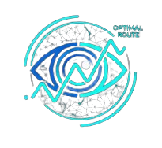

RescuNet
DEPI Graduation ProjectA comprehensive disaster response platform that leverages Multimodal AI to coordinate rescue operations. By fusing aerial surveillance (YOLOv11), Graph Neural Networks (GNN), and NLP, it enables dynamic routing on damaged roads and automated triage of distress signals.
- Dynamic routing via GNN safety prediction and millisecond-level C++ engine.
- Real-time survivor & hazard detection using dual-spectrum drone feeds.
- Automated distress message triage with multi-level priority classification.
- Interactive React website with live map visualization and instant route inference.